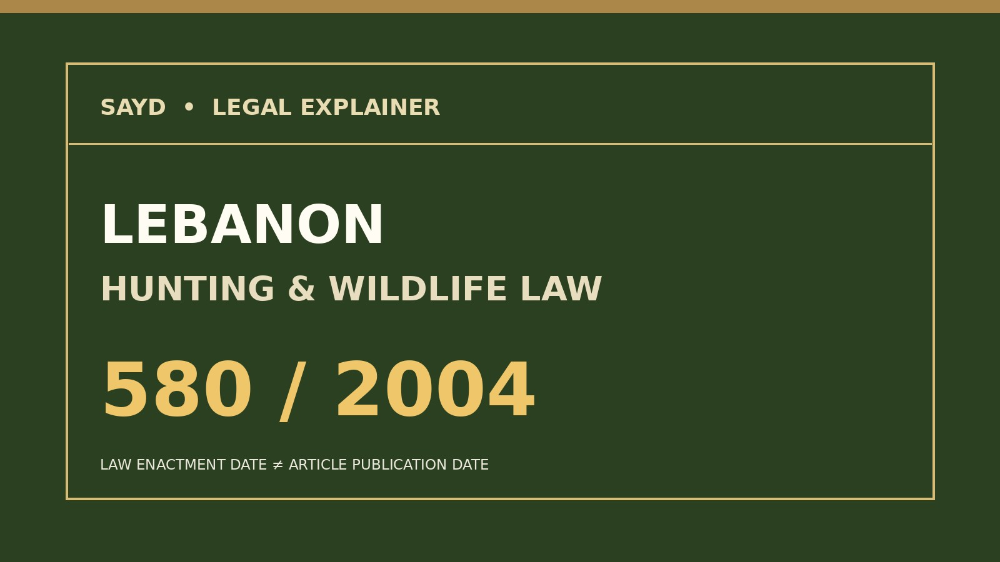

Permis, espèces protégées, méthodes prohibées et zones d'interdiction dans le texte législatif libanais.

L'ouverture administrative de la saison de chasse ne remplace pas la loi qui en fixe les conditions générales. La loi libanaise no 580, datée du 25 février 2004 et publiée au Journal officiel le 4 mars 2004, encadre les espèces pouvant être chassées, les autorisations, les méthodes et les zones protégées.
Selon l'article 4, les oiseaux et mammifères sauvages, résidents ou migrateurs, restent protégés tout au long de l'année sauf lorsque certaines espèces sont explicitement désignées comme gibier, sous conditions. Les dates de saison relèvent d'une mesure d'application distincte : elles ne rendent pas toutes les espèces chassables.
L'article 6 associe le permis de chasse du ministère de l'Environnement à l'autorisation de l'arme et à une assurance de responsabilité civile. L'article 8 interdit notamment la chasse dans les villes, villages et réserves, ainsi qu'à moins de 500 mètres de certains bâtiments et lieux de culte.
L'article 9 proscrit les filets, la glu, divers pièges non sélectifs, les projecteurs et les appels d'oiseaux enregistrés. L'article 10 protège les nids, œufs et jeunes animaux sauvages en toute saison.
Il s'agit d'une lecture de la loi originelle de 2004, et non de l'annonce d'une nouvelle loi en 2026. Toute application concrète exige la vérification des textes modificatifs et des décisions en vigueur.
Source : ministère libanais de l'Environnement, loi 580/2004, articles 3, 4, 6, 8, 9 et 10.